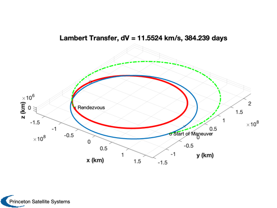

Compute a transfer from earth orbit to the asteroid Apophis.
This uses LambertOpt to search for an optimal start and transfer time given the initial positions of the bodies.
See also Constant, LambertOpt, DVTransfer, PlotLambertTransfer
Contents
%------------------------------------------------------------------------------- % Copyright (c) 2009 Princeton Satellite Systems, Inc. All rights reserved. % Since version 8. %-------------------------------------------------------------------------------
Setup
% Constants %---------- au = Constant('au'); mu = Constant('mu sun'); dayToSec = 86400; % Time span %---------- days = linspace(0,360); t = days*dayToSec; t0 = 30*dayToSec; dTMax = 450*dayToSec; % Apophis 9/3/2009 %----------------- rA = [-1.060134642006718E+00; 2.449001979592227E-01; -3.851125553252051E-02]*au; vA = [-2.431064866762155E-03; -1.470948647780653E-02; 7.209696094968381E-04]*au/dayToSec; % Earth 9/3/09 %------------- rE = [9.509007838786436E-01; -3.366237648105087E-01; 3.499785524900624E-06]*au; vE = [5.457896569254231E-03; 1.614834039489075E-02; -9.428607986007231E-07]*au/dayToSec;
Find the transfer
%------------------ [dV, tOptimal, elT] = LambertOpt( rE, vE, rA, vA, [t0 dTMax], mu ); fprintf('Optimal start time: %g days\n',tOptimal(1)/86400); fprintf('Optimal transfer time: %g days\n',tOptimal(2)/86400); fprintf('Minimum DV: %g km/s\n',dV.total); xEnew = RK45( @FOrb,[rE;vE],tOptimal(1),tOptimal(1),0,1e-6,0,'car',[],mu); xAnew = RK45( @FOrb,[rA;vA],tOptimal(1),tOptimal(1), 0,1e-6,0,'car',[],mu);
Optimization terminated: the current x satisfies the termination criteria using OPTIONS.TolX of 1.000000e+00 and F(X) satisfies the convergence criteria using OPTIONS.TolFun of 1.000000e-04 Optimal start time: -32.9655 days Optimal transfer time: 384.239 days Minimum DV: 11.5524 km/s
Plot the result
%----------------- PlotLambertTransfer(xEnew(1:3), xEnew(4:6), xAnew(1:3), xAnew(4:6), tOptimal(2), dV, elT, mu); %-------------------------------------- % PSS internal file version information %-------------------------------------- % $Id: 64b8e5ca5a7267a0398219af16b631079d75f835 $